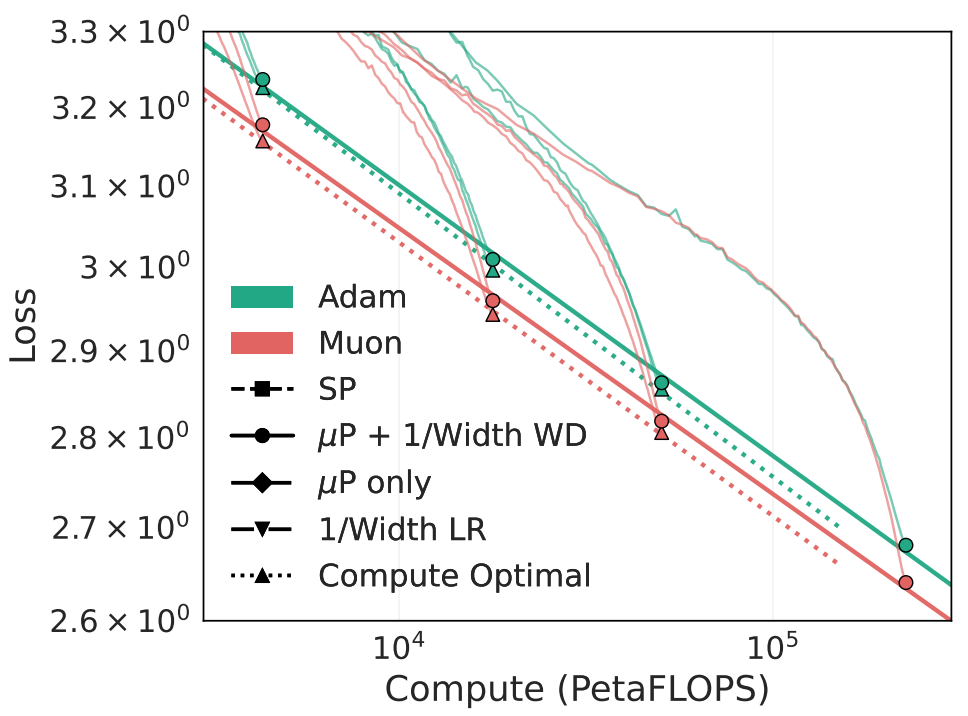
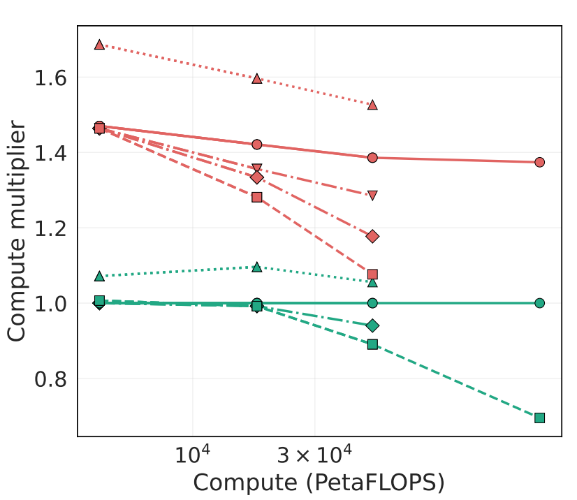
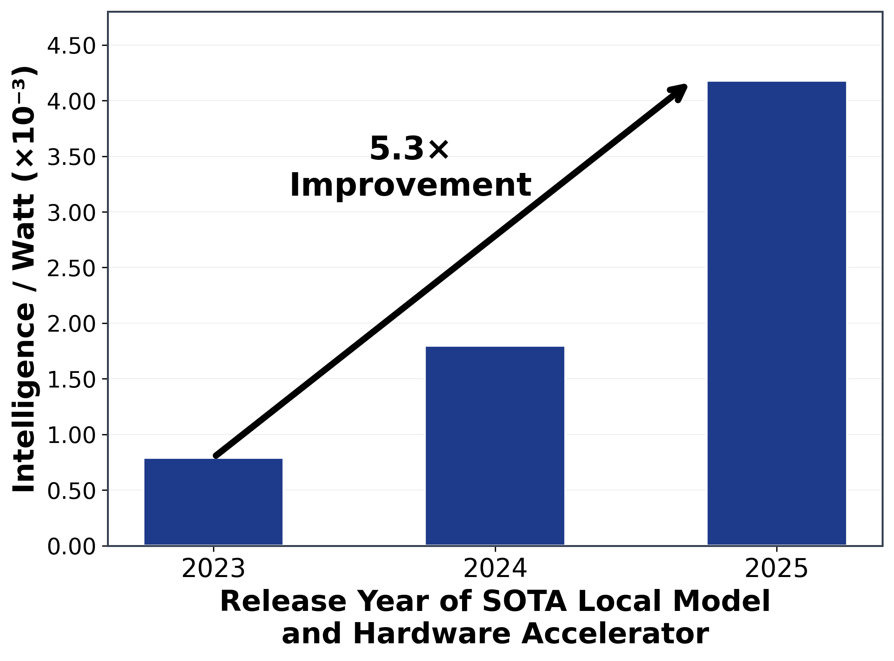
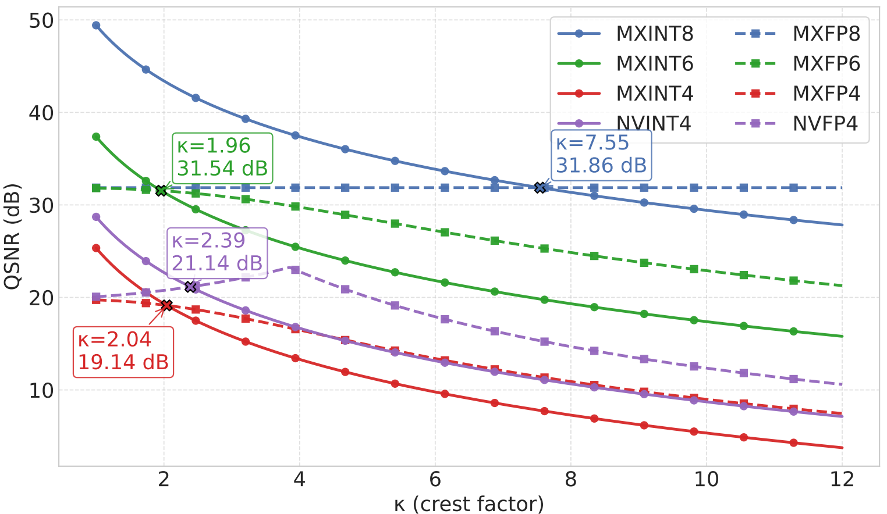
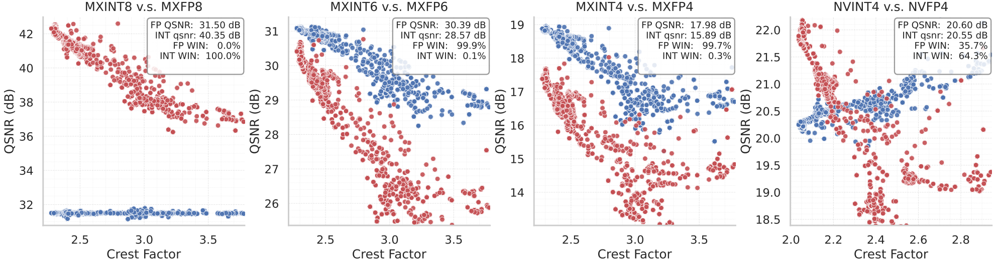
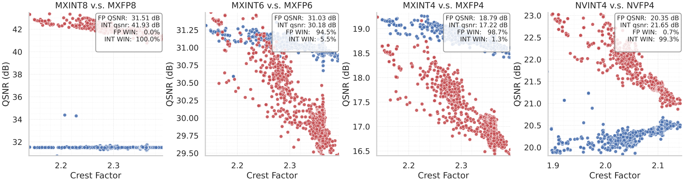
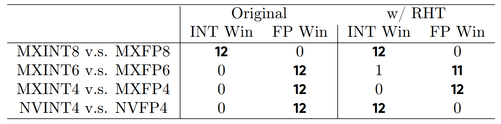
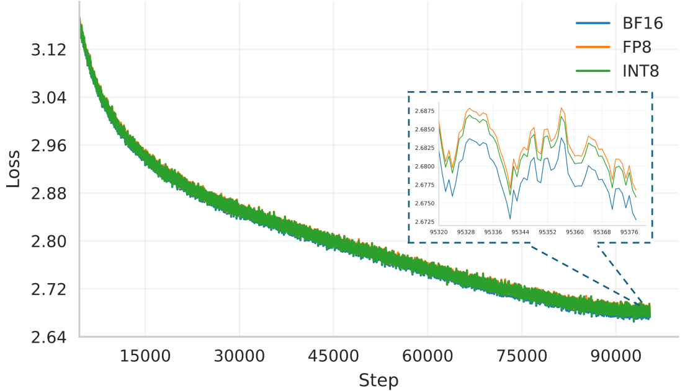

November Papers: Perspectives on efficiency
November is back to a favourite topic of ours: efficiency. We reviewed three of our favorite papers looking on LLM efficiency from different angles:
- First up, How to Scale Second-Order Optimization is looking at optimal tuning of second order optimizers such as Muon.
- Intelligence per Watt discusses our favorite metric on large language models: energy efficiency. And how to take advantage of edge AI inference.
- Finally, Int vs FP is contributing to an old-timer topic in quantization: integer vs floating (block) point formats.
We hope you enjoy this month's papers as much as we did! If you have thoughts or questions, please reach out to us at @GCResearchTeam.
How to Scale Second-Order Optimization
The key idea
Now we know that optimizers like Muon can train LLMs more efficiently than Adam, let's learn how to tune them for optimal efficiency. That will show us the difference between well-tuned Adam and well-tuned second-order optimizers.
Background
Throughout a decade of transformation in deep learning, Adam dominated as the de facto default optimizer of choice for neural network training. Although there have been many and various optimizers proposed, Adam's combination of momentum and normalized gradients with per-parameter adaptivity has proven hard to beat. However, this status quo is being challenged: Muon was shown to be the most efficient optimizer for training LLMs in the nanogpt speed-run, and then scaled up successfully to 16B-parameter models. In this context comes How to Scale Second-Order Optimization, presented at NeurIPS 2025 in San Diego last week.
The key idea in this paper is to analyse the hyperparameters and scaling laws that are applied with second-order optimizers, to find best practice for these new optimizers rather than simply reusing the rules and patterns that have proven to be successful for Adam.
The paper presents several key findings: 1. They derive the maximal update parameterization (\(\mu P\)) for second-order optimizers to transfer learning rate and other hyperparameters from small-scale runs. This includes a recommended scaling factor of \(1/L\) for residual blocks in \(L\)-layer transformers, as per 'CompleteP'. 2. They show that under 'compute-optimal' training, following scaling laws like Chinchilla's 20 tokens per parameter, the weight decay parameter \(\lambda\) should be scaled inversely to the model depth \(D\), so that \(\lambda D\) is roughly constant. 3. They show that the optimal number of tokens per parameter is smaller for Muon: they find ~7 tokens per parameter to be compute-optimal for Muon and 11-14 for Adam. If holding the total training compute fixed, this means that we can train a larger/wider model with Muon than we can with Adam, leading to lower loss overall.
Results
Taken together, these recommendations show that well-tuned Muon can train LLMs with 1.4x less compute than a well-tuned Adam run requires to reach the same loss.

This figure from the paper shows Adam compared to Muon for training LLaMA-architecture LLMs at 190M-1.4B parameters. The 'Compute Optimal' curves (with triangle markers) use fewer tokens per parameter, so the fixed compute budget can be deployed to widen the model architecture, thus leading to lower loss compared to the runs with 20 tokens per parameter (with circle markers). For example, the smallest compute-optimal Adam run, at ~\(6 \times 10^{16}\) FLOPs, uses model width of 576, whereas the Muon run uses a width of 704. Note that the NeurIPS review discussion suggests that the FLOP count excludes the additional compute required for the Muon optimizer steps, which the Muon blog post estimates as an overhead of below 1% total FLOPs.

This plot corresponds to the graph above, and ablates each of the recommendations in the paper, showing the reduction in compute for Muon compared to Adam under their recommended scaling rules. The key takeaway is that when scaled correctly (circle markers), Muon maintains a constant 1.4x reduction in compute compared to Adam. Less-careful deployment of Muon (e.g. in the SP runs with square markers) leads to much smaller reductions in compute at larger model scale, reaching as little as a ~1.1x advantage for models at ~640M parameters.
Takeaways
- Second-order optimizers have a real and practical advantage over Adam for training LLMs at a range of model scales.
- Getting optimal efficiency from new optimizers requires some care: if we just swap out Adam for Muon, we're leaving potential efficiency gains on the table.
Intelligence per Watt: Measuring Intelligence Efficiency of Local AI
The key idea
Can small local AI models shoulder a big portion of today’s AI workload—and do so efficiently? A new study by Saad-Falcon et al. tackles this question by introducing intelligence per watt (IPW) as a metric, defined as task accuracy per unit of power. The backdrop is an exploding demand for LLM inference that strains cloud data centers. Two trends make a case for local inference: open-source LLMs with ≤20B parameters approaching frontier-model performance, and increasingly powerful consumer hardware (e.g. Apple’s M4 chip) that can run these models at acceptable speeds.
By measuring accuracy, energy, and latency on 1 million real queries across 20+ modern local LMs and various accelerators, the authors assess whether local devices can meaningfully offload work from centralized cloud servers. The bottom line is promising – efficiency, not just raw capability, could drive a paradigm shift from cloud-centric AI toward hybrid or even predominantly local AI inference.
Their method
In order to determine if Local AI models can answer queries, the researchers have selected 1M tasks from different datasets (WildChat, MMLU PRO...), covering chat, reasoning, expert knowledge, and economic breadth. 20 Open-weights models are selected including Qwen3, Gpt-oss, Gemma3, and compared against SOTA closed models (GPT-5, Gemini 2.5 PRO, Clause Sonnet 4.5). Answers are either graded with an LLM-as-a-judge evaluation or via exact match where ground truths exist. Accuracy and Perplexity per Watts are measured via an an open-source benchmarking harness including high-temporal resolution.
Key Findings
Local models can answer most questions. Small on-device LMs can correctly handle 88.7% of single-turn chat and reasoning queries. In fact, when each query is routed to the best-suited local model (out of a pool of 20), the local setup outperforms a cloud-only approach on 3 out of 4 benchmark tasks. Creative queries see >90% accuracy, whereas highly technical domains are lower at ~68%, indicating some gaps remain. These results underscore that modern local models can now answer a majority of everyday users' queries.
The intelligence-per-watt of local AI systems has improved 5.3× over the last two years. This reflects a combination of better models and better chips – roughly a 3.1× gain from model improvements (architectures, training, distillation) and a 1.7× gain from hardware efficiency. Smaller models are getting smarter, and devices are getting more power-efficient, multiplying their combined impact. Figure 1 below illustrates the jump in IPW from 2023 to 2025, based on the best model-accelerator pair each year.

Cloud still has an efficiency edge. Despite the progress, today’s purpose-built datacenter accelerators remain 1.4×–2.3× more efficient (higher IPW) than consumer-grade chips when running the same model. The study found that a laptop-class Apple M4 Max delivered about 1.5× lower IPW than an enterprise NVIDIA GPU on identical model inference. This efficiency gap highlights room for improvement in local hardware. The authors note that it “justifies continued hardware specialization for local AI workloads” going forward.
Hybrid local-cloud inference saves energy. Perhaps the most practical finding is that a smart routing system can yield enormous resource savings. If an oracle router always chooses the smallest adequate local model for each query (and falls back to a larger cloud model only when needed), the analysis showed a ~80% reduction in energy consumption and similar drops in compute and cost, compared to using cloud-only LLMs. Even a more realistic router (e.g. one that guesses correctly 80% of the time) can cut total energy use by 60% without hurting accuracy. Given the current challenge in building AI inference capacity globally, shifting load to local devices is a compelling proposition.
Limitations
This paper is a good first step in figuring why and how local AI inference capabilities in devices should be prioritized. The systems in use are measured running fairly simple scenarios that may not reflect real-world usage.
First, the evaluation focused on single-turn Q&A and reasoning tasks, so it did not cover multi-turn dialogues or very specialized workflows (e.g. tool use, web browsing by an agent). There are many query types where local models might struggle or require larger contexts than a device can handle.
Second, the impressive “local vs cloud” comparison stacks the deck in favor of local: the best-of-local ensemble drew from 20 models (ranging from 1B to 32B parameters), whereas the cloud baseline used only a few top-tier models. In practice, designing a very good local router and serving multiple models on-device is an unsolved engineering challenge.
Finally, while local inference showed “interactive” latencies, the user experience of a hybrid system wasn’t deeply examined. Networking, model loading times, and other systems factors would affect real-world responsiveness in a local-plus-cloud deployment. Batch sizes have been kept to 1 for simplicity, which is not at all reflective of large inference systems. Those need to achieve very high utilization to be cost effective and hence resort to many optimisations around caching, continuous batching, speculative decoding and more.
Takeaways
Intelligence per Watt is a timely metric that captures the real progress in making AI both smarter and leaner. This paper shows that a significant fraction of LLM queries could be served locally today, at a fraction of the energy cost, and that fraction is growing every year. For AI researchers and engineers, it’s a call to prioritize power-efficient model design and to co-design algorithms with hardware. For the industry, it hints at a future where personal devices handle much of the AI workload needs to be accounted for. Achieving that vision will require continued advances in both local models and silicon. The trajectory outlined here makes it look not only feasible, but perhaps inevitable.
INT v.s. FP: A comprehensive study of fine-grained low-bit quantization formats
Background
Integer vs floating point formats has been, and still is, a long debate in the quantization machine learning literature. Historically, research work on neural network low-precision training has mainly focused on how to combine hardware available floating point formats (i.e. FP16, BF16, FP8) with techniques such as loss scaling and tensor scaling to get accurate model training. On the other hand, the (edge) inference literature has extensively covered integer quantization, usually with finer grained scaling resolution (e.g. channel scaling). The later choice motivated by the existence of native int8 and int16 vector instructions on numerous hardware platforms, including Arm CPUs on the edge, whereas FP8 hardware support is much more recent and limited [1].
Latest low-precision literature, on training as well as inference, has converged towards the use of fine-grained block scaling formats, with block size 16 or 32. The later provide improved accuracy for machine learning models, while allowing to push towards 4-bits and below formats. In this work, the authors are providing a large overview of different integer and floating point block scaling formats, and how they perform in inference and training scenarios.
Analysis
The paper provides an in-depth analysis of quantization error, on theoretical Gaussian data as well as experimental training tensors. The quantization signal-to-noise ratio (QSNR) is defined as following:
With block scaling quantization format, one key metric is the crest factor:
i.e. comparing the peak value of a tensor to its \(L^2\)-norm. Block scale quantization is usually done by renormalizing all values by the maximum in a block, meaning that if the later is an outlier, the other values will tend to be "squeezed" to the sub-normal range, or flushed to zero. As a consequence, the larger the crest factor is, the more quantization error will tend to be large for low-bits formats.
A theoretical QSNR modelling is provided on Gaussian random data, showing that floating point quantization is showing better signal-to-noise ratio for large crest factor (the cut-off being around 2).

A similar analysis is done on experimental tensors (activations, weights and gradients):

It shows in particular that int4 is competitive with fp4 when associated with an FP8 E4M3 floating point scaling factor. Additionally, the combination with random Hadamard rotation on the every block leads to a substantial QSNR improvement on integer formats:

As observed on the x-axis, applying an Hadamard transform will tend to decrease the crest factor of block, as any large outlier will be "spread" over all values. As a consequence, in the 4-bits scenario, most blocks are moved in a crest range favorable to integer quantization.
Experimental results
The data analysis of the authors is combined with experimental results, on inference and training. On the inference side, a direct-cast comparison in done on a collection of models:

As argued by the authors, integer block formats match the accuracy of floating point formats when combined with Hadamard transforms. It would interesting to see if these results can be extended to quantization aware training, which is nowadays the standard for the optimal accuracy on quantized models.
The authors also validate their approach on LLM pre-training. Training experiments are done on Llama1B and Llama3B models, using the Olmo2 dataset:

As presented in other FP8 and FP4 pre-training papers [2,3], it would be interesting to extend these experimental pre-training runs beyond 100B tokens to validate the result. As seen in these works, using a different numerical precision may have an effect on the training loss curve only later in the training (i.e. after 200-300B tokens).